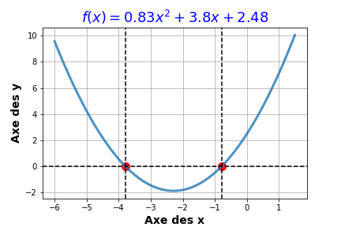

TD N°2 : Contrôle du flux d’instructions
Oct 23, 2019
Table des matières
Exercise 1: Comparer deux entiers
Exercise 2: Comparer deux chaînes
Exercise 3: Convertir Euro contre Dinar Tunisien | EUR TND
Exercise 4: Résolution d’une équation du second degré
Exercise 5: programmez une boucle while
Exercise 6: Créer une liste avec une boucle while
Exercise 7: Programmer une boucle for
Exercise 8: Ecrire une fonction Python
Exercise 9: Renvoyer trois valeurs d'une fonction Python
Exercise 1: Comparer deux entiers
Écrivez un programme qui vous demande de saisir 2 nombres entiers et affiche la plus petite de ces valeurs.
Exercise 2: Comparer deux chaînes
Écrivez un programme qui demande d'entrer 2 chaînes et qui affiche la plus grande des 2 chaînes (celle qui contient le plus de caractères).
Exercise 3: Convertir Euro contre Dinar Tunisien | EUR TND
Écrivez un programme qui convertit l'euro (EUR) en dinar tunisien (TND):
- Le programme commence par demander à l'utilisateur d'indiquer par une chaîne de caractères 'EUR' ou 'TND' la devise du montant qu'il entrera.
- Ensuite, le programme exécute une action conditionnelle de la forme:
if devise == 'EUR' :
# Expression 1
elif devise == 'TND' :
# Expression 2
else :
# affichage d'un message d'erreur
Exercise 4: Résolution d’une équation du second degré
Soit l’équation du second degré \( a x^2 + bx + c = 0 \) où \( a \), \( b \) et \( c \) sont des coefficients réels.
a) Écrivez un programme qui qui demande d'entrer les coefficients et affiche les solutions de l'équation.
Solutions analytiques
Des solutions sont recherchées dans le cas général, compte tenu du discriminant \( \Delta = b^2 - 4ac \), l'équation admet comme solutions analytiques: $$ \left\{ \begin{array}{ll} \Delta > 0 & deux \ solutions \ réelles : \ x_1 = \frac{-b - \sqrt{\Delta}}{2a}; \quad x_2 = \frac{-b + \sqrt{\Delta}}{2a}\\ \Delta = 0 & une \ solution \ double : \ x_0 = \frac{-b}{2a} \\ \Delta < 0 & deux \ solutions \ complexes : \ z_1 = \frac{-b - i \sqrt{-\Delta}}{2a}; \quad z_2 = \frac{-b + i \sqrt{-\Delta}}{2a} \end{array} \right. $$ Algorithme
Pseudo-code de l'algorithme
Présentons tout d'abord un pseudo-code de l'algorithme, c'est-à-dire le détail des opérations à effectuer sans syntaxe propre du langage.

b) Soit la fonction \( f(x) = 0.83 x^2 + 3.8 x + 2.48 \). En utilisant le programme précédent, trouvez les solutions pour \( f(x) = 0 \).
c) La représentation graphique de \( f(x) \) est indiquée ci-dessous:

Nous allons utiliser une fonction EqSecondDegree(a,b,c) dans TD N°3 pour reproduire cette figure en utilisant les bibliothèques numpy et matplotlib.
- Ecrivez la fonction
EqSecondDegree(a,b,c)qui renvoie les solutions de l'équation \( a x^2 + bx + c = 0 \). - Enregistrez la fonction
EqSecondDegree(a,b,c)dans un script Pythonracines.pypuis l'exécuter dans la cellule de code suivante:
d)
En utilisant la fonction EqSecondDegree(a,b,c), trouvez les solutions de \( f(x) = 0 \).
Exercise 5: programmez une boucle while
Définir une séquence de nombres: $$x_n = n^2 + 1$$
pour les entiers n = 0,1,2,…, N. Écrivez un programme qui affiche \( x_n \) pour n = 0,1,…, 20 en utilisant une boucle while.
Exercise 6: Créer une liste avec une boucle while
Stockez toutes les valeurs \( x_n \) calculées dans l'exercice 5 dans une liste (à l'aide d'une boucle while). Afficher la liste complète (en un seul objet).
Exercise 7: Programmer une boucle for
Faites l'exercice 6, mais utilisez une boucle for.
Exercise 8: Ecrire une fonction Python
Écriez une fonction x(n) pour calculer un élément dans la séquence \( x_n = n^2 + 1 \). Appelez la fonction pour n = 4 et écrivez le résultat.
Exercise 9: Renvoyer trois valeurs d'une fonction Python
Écrivez une fonction Python qui évalue les fonctions mathématiques \( f(x) = cos(2x) \), \( f'(x) = -2sin(2x) \) et \( f"(x) = - 4 cos(2x) \). Retourner ces trois valeurs. Écrivez les résultats de ces valeurs pour \( x = \pi \).